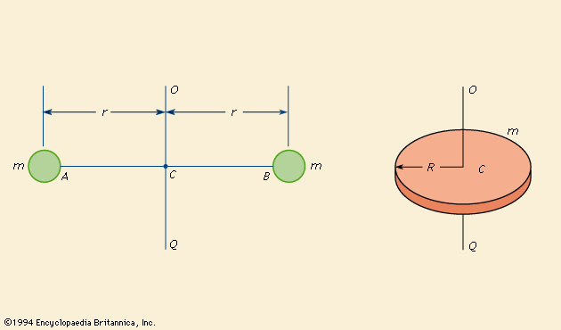

You’re already familiar with mass — it’s a measure of how much matter is in an object and how hard it is to change its linear motion (like speeding up a rolling ball). Now, when objects spin or rotate, their resistance to changes in rotational motion depends not just on how much mass they have, but also on how that mass is spread out around the axis they’re spinning about. This is what the moment of inertia measures.
Moment of inertia, symbolized as I, tells us how “hard” it is to spin an object faster or slower. The bigger the moment of inertia, the more effort (torque) it takes to change the rotational speed.
Unlike mass alone, moment of inertia depends heavily on where the mass is located relative to the rotation axis. Mass far from the axis contributes much more to the moment of inertia than mass close to it.
For an object made of many small pieces (or particles), each with mass \( m_i \) at distance \( r_i \) from the axis, the total moment of inertia is:
Imagine two small masses connected by a light, rigid rod 2 meters long. The system rotates about an axis through the center of the rod, perpendicular to its length.
Each mass is 3 kg, located at the rod’s ends.
Calculate the moment of inertia \( I \) of this system about the given axis.
Since the axis passes through the center, each mass is exactly 1 meter away:
So the total moment of inertia of the system is 6 kg·m².
For objects with mass distributed continuously (like rods, disks, spheres), we use an integral instead of a sum:
Here, \( dm \) is an infinitesimally small piece of mass at a distance \( r \) from the axis.
Consider a thin rod of length \( L \) and total mass \( M \). We want to find its moment of inertia when it rotates about an axis through its center, perpendicular to its length.
Since the rod is uniform, its mass per unit length (linear mass density) is:
We take the rod along the x-axis from \(-\frac{L}{2}\) to \(+\frac{L}{2}\). A small element of length \( dx \) at position \( x \) has mass:
The distance from the rotation axis (at \( x=0 \)) is simply \( |x| \), so:
Evaluating the integral:
Simplifying:
Answer: The moment of inertia of a uniform thin rod about its center is:
Now for any given values of mass and length, we can solve for the moment of inertia. For example, if the rod was 2 kg and was 6 m long. The moment of inertia would be 6 kg·m²
- The moment of inertia generalizes mass to rotational motion and depends on how mass is distributed.
- The further the mass is distributed from the axis of rotation, the greater the value for moment of inertia will be, making it harder to rotate.
- For discrete masses, it’s a sum of \( m_i r_i^2 \).
- For continuous distributions, it’s an integral \( \int r^2 \, dm \).
- Calculus allows finding moments of inertia for real objects like rods and disks.
- The rod example shows the moment of inertia depends on length squared and total mass.